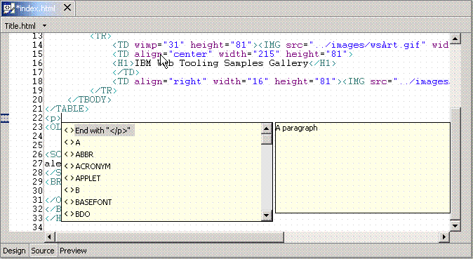

Content assist helps you insert or finish a tag or function or finish a line of code in a structured text editor. The placement of the cursor in the source file provides the context for the content assist to offer suggestions for completion.
Most of the structured text editors have content assist. For a list of editors that have content assist, see Structured text editors for markup languages. For information on how to get content assistance, see Getting content assistance in structured text editors
The sections below describe specifics of HTML content assist, JavaScript™ content assist, and JSP content assist.
HTML content assist
HTML is flexible in that some HTML elements allow end tags to be optionally omitted, such as P, DT, DD, LI, THEAD, TR, TD, TH, and so on. Other HTML elements that are defined to have no content may require the end tag always be omitted, such as BR, HR, LINK, META, and IMG. This flexibility makes the content assist function within the HTML source page editor less precise than it might be with a more rigidly constrained markup language.
HTML content assist is most beneficial when you need to complete a tag name, add an attribute name-value pair within a start tag, or select from an enumerated list of attribute values.
Although content assist only shows attribute names that have not already been specified in a start tag, it does not take into account grammar constraints for tags. For example, the HEAD element in HTML only permits zero or one occurrences of a TITLE tag in its content. If you prompt for content assist within a HEAD content that already contains a TITLE tag, content assist will still show TITLE in its proposal list.
However, if an attribute is required according to the DTD/Schema, that attribute will show up at the top of the list, with a yellow circle indicator on its icon.
If your cursor is in a position where content assist is available, a pop-up list of available choices is displayed. The list is based on the context. For example, if you use content assist directly after an opening paragraph tag (<p>) , the first item in the content assist list will be the corresponding closing paragraph (</p>) tag.
The content assist list displays all available tags for the current
cursor position, including templates. The picture below shows the default
content assist list for a paragraph tag example:

Tag proposals are listed alphabetically. If you type a < (to begin a new tag) before prompting for content assist, and begin typing the first one or two letters of the tag that you want to add, the proposal list automatically refreshes to reflect proposals that match the pattern you have typed. If you do not type a < before prompting for content assist, you can click within the proposal list and then type the letter that the tag begins with, to reduce (somewhat) the amount of scrolling to locate the desired tag.
As you type the first one or two letters of the attribute names or enumerated attribute values that you want to add to a tag, the list automatically refreshes to reflect proposals that match the pattern you have typed.
 When using Linux (Motif
or GTK) and a DBCS locale, double-clicking on the content assist list can
sometimes cause the Java™ VM to terminate. Instead of double-clicking
on the list, use the arrows and Enter keys to make the selection from the
list.
When using Linux (Motif
or GTK) and a DBCS locale, double-clicking on the content assist list can
sometimes cause the Java™ VM to terminate. Instead of double-clicking
on the list, use the arrows and Enter keys to make the selection from the
list.JSP content assist
You have many options for embedding Java and HTML code in your JSP pages by using content assist.
All of the JSP
tags are included both in the template list and in XML format (for example, <jsp:expression>).
To add JSP scriptlet tags, for example, move the cursor to the appropriate
position in the file and press Ctrl+Space to use content assist. Select  from the proposal list to insert <% %> in the
document.
from the proposal list to insert <% %> in the
document.
<% System.currentTimeMillis() %>
This example will evaluate the Java statement to get the current time in milliseconds.
<b>This is the time : <%= System.currentTimeMillis()%></b>
<jsp:useBean id="useBean" class="java.lang.String"/>
The useBean tag enables you to create a bean called aString of type String. Then when you use content assist, this is recognized as a declared variable. For example, if you use content assist after aString, as follows:
<% aString. %>the content assist list shows available methods. This is because aString has been declared as a bean of type String.
<% a %>content assist knows that aString exists, and it is shown in the content assist list.